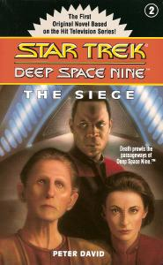

The Siege |
|  |
| AUT | Peter David |
| PAG | 272 |
| EDI | Pocket Books, 1993 |
| ISBN | 0-671-85237-X |
Quando Deep Space Nine viene costretta ad entrare nel
wormhole
a causa di un aumento di emissione di gravitoni, il personale della stazione
vive momenti di estrema tensione. Ma quando l'ansietà sfocia nell'omicidio di
un leader religioso di Edeman, Sisko e Odo capiscono di dover affrontare un
problema ben maggiore.